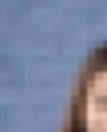
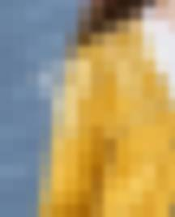
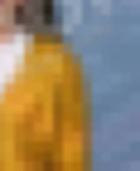

Four-corner reveal (demo)
Hover a corner (or tap it on a phone) to see that corner clearly. Only one corner is clear at a time, and the blue cross down the middle is never sent to the browser at all.



Clear corners load only when you point at them (watch the Network tab).